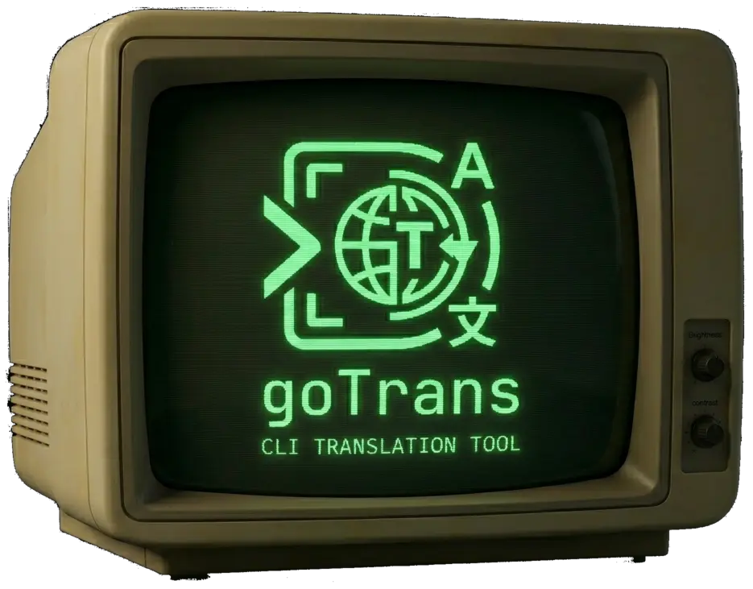

Command-line translation with multiple engines
gotrans is a Go implementation inspired by translate-shell: fast CLI output, optional REST service, and pluggable backends including Google, Bing, Yandex, and Apertium.
Why it exists
Terminal-first workflows still deserve solid translation tools: predictable flags, --text for automation, and a small HTTP surface when you need to integrate with other services—without shipping a full browser stack.
What it is
gotrans is the Go version of translate-shell, with a more advanced feature set on top of the same idea: a single binary can translate from the shell or run as a configurable REST service. Engines are swappable; output can be brief, verbose, or plain text only. Large inputs are split into ordered chunks so provider limits are less likely to break long documents.
Engines
Google (default), Bing, Yandex, Apertium, auto selection, and mock for tests.
Two modes
Run one-off translations in the terminal or start the REST API with an INI config.
Automation-friendly
--text, stdin, -i/-o files, and :fr / -t language shortcuts for scripts.
CLI quick start
Translate
gotrans "Hello, world!" gotrans :fr "Hello" gotrans -e bing -t es "Good morning" echo "pipe me" | gotrans --text -t de gotrans -i document.txt -t fr gotrans --text -i in.txt -o out.txt -t de
Service (example)
gotrans --service --init=service-scripts/gotrans.ini
Default bind in sample config is often localhost:8100. Adjust host, port, engine, and languages in your INI file.
REST API
With the service running, typical entrypoints include health, engines list, languages list, and translate.
Health check
curl -fsS http://127.0.0.1:8100/api/v1/health
Translate (JSON)
curl -sS http://127.0.0.1:8100/api/v1/translate \
-H 'content-type: application/json' \
-d '{"text":"Hello, World!","source_lang":"auto","target_lang":"es","engine":"google"}'
Download
Prebuilt binaries (zip) for each platform.